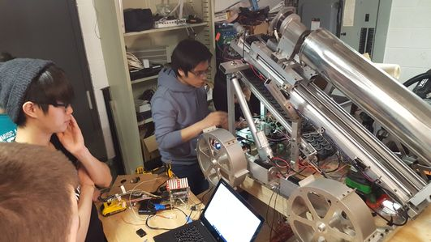
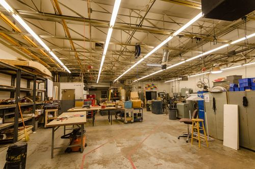

Eduardo Perez
Welcome to my website. I'm currently a engineering student at Illinois Tech pursuing a Bachelors of Science in Computer Engineering. The following are my areas of interest.
Here are my areas of interest
Who am I?
Automotive
 Similar to other car enthusiast, my love for cars started with my Dad's 1996 Chevy silverado
Cheyenne 2500. His truck was the family and work car that was part of my childhood. He bought it
brand new and used it ever since. But because of his stroke, the truck was parked in the garage for
about 9 years. Later on, my family bought a my car. Through my car, I began to learn wrench on it to
save some money. Most of my knowledge comes my Dad, his books of automotive encyclopedia, and
Youtube. After wrenching my car, myself, my brother, and my dad decided to put the truck back on the
road. After changing the fuel pump, battery, and added 5 gallons of gas, it started up as if nothing
happended. The sound of the small block v8 roaring again from sleeping put a simile on our faces.
All 8 cylinders were firing and the transmission still worked! To me and my brother, we were
surprised that it was still working after just sitting for a long period. But to my Dad, it was to
no surprised as he was confident in his truck. Fixing the truck made me realize that I enjoy
working with my hands and I gained an interest to pursue a path in the automotive industry.
Similar to other car enthusiast, my love for cars started with my Dad's 1996 Chevy silverado
Cheyenne 2500. His truck was the family and work car that was part of my childhood. He bought it
brand new and used it ever since. But because of his stroke, the truck was parked in the garage for
about 9 years. Later on, my family bought a my car. Through my car, I began to learn wrench on it to
save some money. Most of my knowledge comes my Dad, his books of automotive encyclopedia, and
Youtube. After wrenching my car, myself, my brother, and my dad decided to put the truck back on the
road. After changing the fuel pump, battery, and added 5 gallons of gas, it started up as if nothing
happended. The sound of the small block v8 roaring again from sleeping put a simile on our faces.
All 8 cylinders were firing and the transmission still worked! To me and my brother, we were
surprised that it was still working after just sitting for a long period. But to my Dad, it was to
no surprised as he was confident in his truck. Fixing the truck made me realize that I enjoy
working with my hands and I gained an interest to pursue a path in the automotive industry.
Robotics
 When it comes to Robotics, I start geeking out. Growing up watching NOVA and learning about the Mar's Rover during middle school, it fascinated me about NASA was able to control or program a robot to perform task on a different planet. But science fiction through different mediums such as video gaming(Titanfall 2), movies(The sound of the heavy metallic steps of an AT-AT), shows revealed on how creative we can get when designing robots whether for entertainment or helping the world. This may me want to pursue my education into engineering. In spring 2018, I was invited to be a volunteer in the electrical team of IIT's Nasa Robotics Mining team. This gave me first hand experience on what it is like to build a robot. I can easily say, it is "easy say than done". I started out by helping make wires for electrical components and assisted with troubleshooting electrical problems. Some nights the team stayed til midnight to prep the robot for competition. Seeing the robot come to life remind me that NASA engineers are doing something similar in prepping a space probe. In the wide field of robotics, I'm interested in mechs and exoskeltons.
Maker Spaces
 I'm became familiar Maker Spaces when I went to one called Pump Station One with a friend to work on a project for a club at my community College. He was member of the Maker Space and he showed me around the site. It amazed me of all the tools at the ready to be used to create stuff. The site had tools such for wood works, welding, 3D printing, laser cutters, electronics, and they even had an electron microscope (no longer there). When I was at pump station one, everyone was welcoming and they helped each other working on their own projects. I remember help someone cutting a transformer for parts to build his own speaker. Later on in the day, they invited everyone in the space to a big dinner to celebrate someone birthday. Through the celebration, I met others and learned about projects they were working. The people I met, range from community members students, welder, carpenters, and programmers/hackers. A Maker space is basically a place where people can gather to create, invent, and learn. While having tools readily available. Having a site such as Pump Station One at other locations encourages anyone to create, build learn, and share new things.